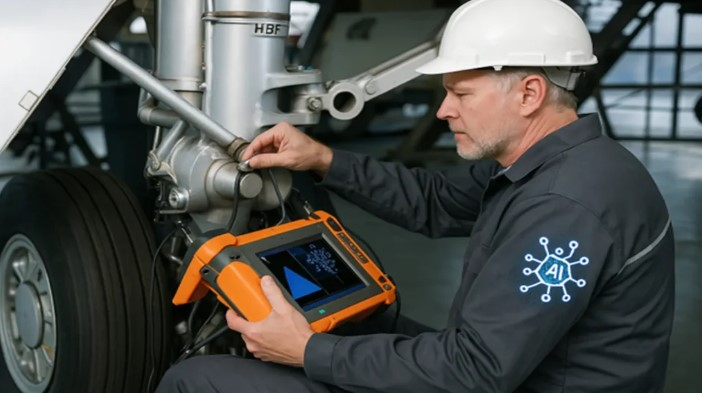
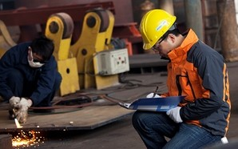

La inspección de soldaduras constituye un proceso fundamental dentro del control de calidad industrial, cuyo propósito es verificar que las uniones soldadas cumplan con los requisitos establecidos en códigos, normas y especificaciones técnicas aplicables. Este proceso permite asegurar la integridad estructural, seguridad y confiabilidad de los componentes y estructuras sometidas a servicio.
En APEEX NDT SAC realizamos inspecciones especializadas mediante la aplicación de Ensayos No Destructivos (END/NDT), técnicas que permiten evaluar la calidad de las uniones soldadas sin afectar el material inspeccionado. A través de estos métodos es posible detectar discontinuidades como grietas, porosidad, falta de fusión, inclusiones de escoria o falta de penetración.
Nuestro equipo técnico cuenta con formación especializada y certificaciones internacionales para garantizar resultados confiables en proyectos industriales de alta exigencia.


Permite identificar defectos que podrían provocar fallas estructurales o accidentes durante la operación de los equipos.
Detectar discontinuidades de manera temprana evita reparaciones costosas o paradas inesperadas de producción.
Garantiza que los procesos de fabricación cumplan con los códigos y estándares internacionales.
Asegura la calidad de las uniones soldadas en equipos críticos de operación industrial.
Las inspecciones de soldadura realizadas por APEEX NDT SAC se desarrollan bajo el cumplimiento de códigos y estándares internacionales ampliamente reconocidos en la industria.

Total: $0